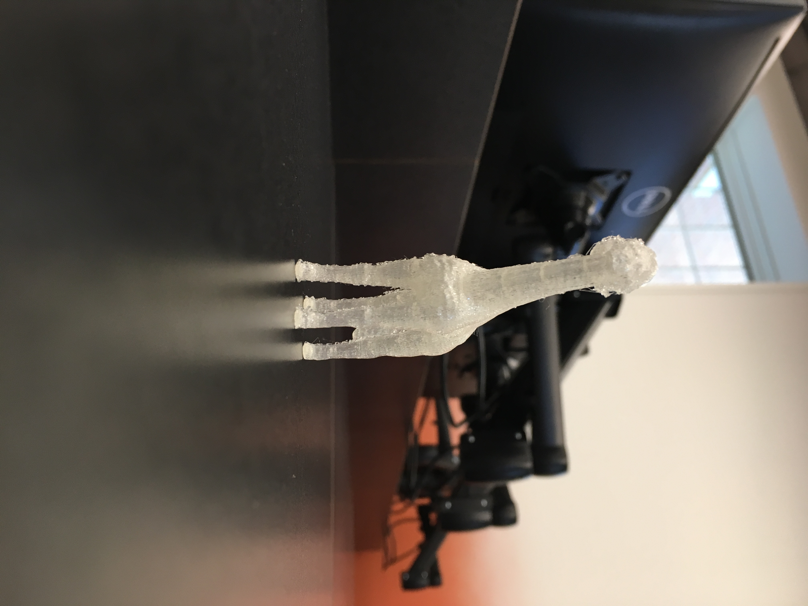
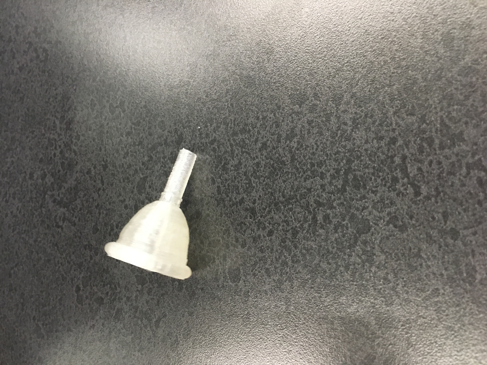
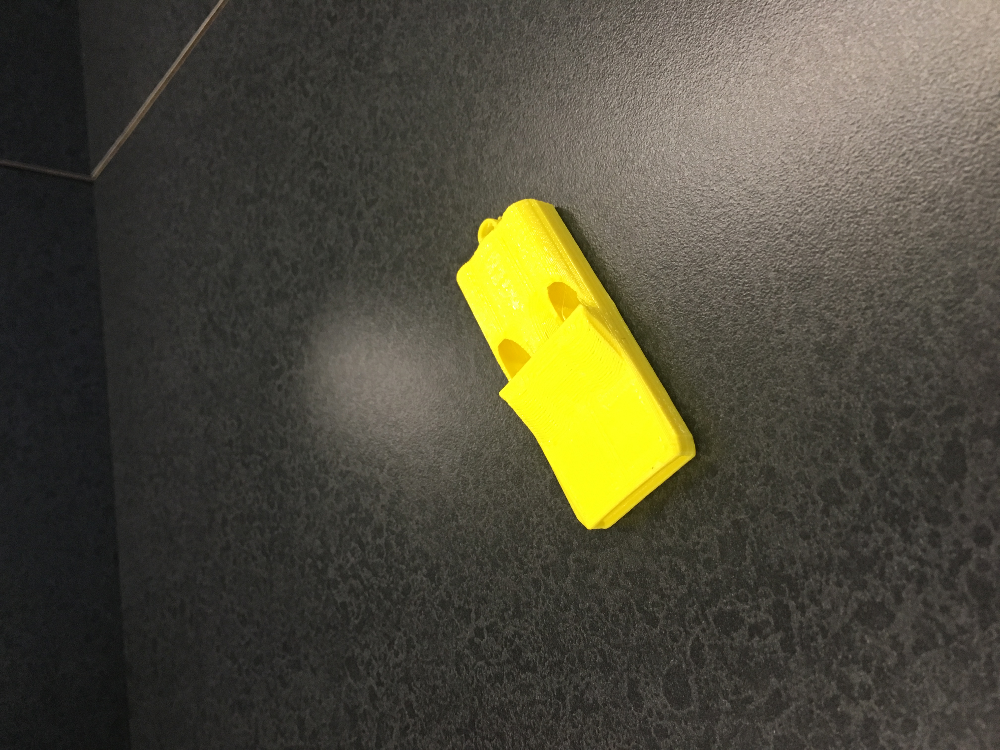

Home Page
Cycle 5
What I did
The first task of the cycle is to answer these questions:
What are the design rules and limitations for the MakerBot Replicator 5th Gen printers?
The rules are that you have to have supports to hold up your structure, and you can't print bigger than the machine.
It also helps to put your design on a base.
What type of 3D printing process does the MakerBot Replicator use?
The Replicator uses an additive process, by adding heated filament onto itself until the design is created.
What are the advantages to this type of printer versus the FormLabs printer?
The advantages are it is cheaper in smaller scale, it is relatively short print time, and easy to maintain. It is also easy to use.



I decided to put my head on a giraffe body. It came out too small, but looked good nonetheless.
For my useful object, I found a Tuba mouthpiece. I changed the bore of the part that goes into
the tuba, as it seemed too small. Again, it came out too small, so it will work better in a trumpet.
For my object that couldn't be made subtractively, I decided a whistle would fit the bill.
The one I found was said to make sound up to 130db, but the modifications I made gives it a whopping 0db
tone. It finally came out the correct size, but next time I would make it a little louder.